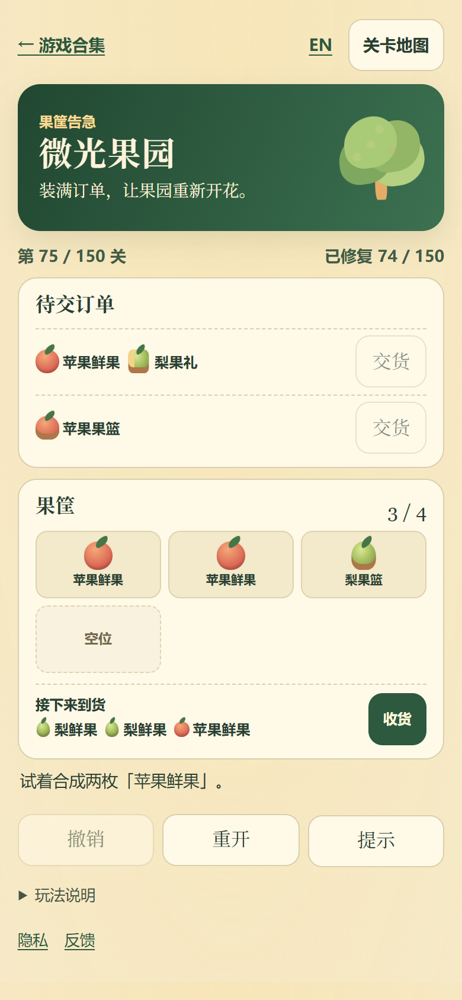

合成 × 订单取舍 / TINY ORCHARD
微光果园
合起成熟的果实，完成订单，让小果园一点点恢复生机。
开始游玩 / Play →开始的一步
先把两颗同阶果实合在一起；齐料后完成订单，再亲自选择下一单。
Merge matching fruit, complete an order, and choose what to grow next. Plan around limited basket space and visible incoming fruit.